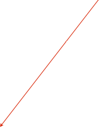

Run Scripts


Overview
Run Scripts are just ORCAScripts that are available for Run Control to automatically run just before a run is started or stopped. See the ORCAScript page for the scripting language details. The script IDE can be opened either from Run Control or by double-clicking the Run Script icon.
Exit Values (Important!):
The return value of a script executed before a run must be non-zero for the run process to continue. A return value of zero will abort the run startup. The return value of a script executed at run stop is ignored.
Limitations:
Do NOT try to run any of the run control methods (i.e. startRun, stopRun, etc) from within a script meant to be executed by Run Control. Unescapable recursion will result. It makes no sense to check and wait for the run to have started from within the script. If you do get into an infinite loop, you can open the script editor and manually stop the script from there. If a script linked to the start of run needs to abort the run, just return NO from the script.
Using in the Run Control Dialog:
Drag Run Scripts into the run control run script list. They can then be selected in the main dialog to run just before the run is started. The name of the script will be used as a label here and in the selection popup. Usually used to set the run type mask and/or do some special hardware setup or initialization.
Select the one to run in the popup. Only scripts in the Run Scripts list will show up here.
You can also optional set a Run Script to execute at the start or end of a run with these popups. A Run Script doesn’t have to be in the Run Scripts list to show up in these popups.
Considerations for Experts and Special Cases:
-
•It is possible to have a run script short-circuit the run start process and let a run continue before the run script exits. If you need to do that, just call the run control method letRunStart. If that method is called the exit value of the script will be ignored. The script is still not allowed to do any actual run control, but it can optionally start up other scripts that can.
-
•If other scripts are launched do run control, you will need to be very careful and have those scripts reset the Selected Run Script to be a Standard Run -- otherwise you will get into an infinite recursion situation.
-
•You may also have to pay careful attention to the Run Type bits. Normally they will get reset to the original values that existed at the start of the original run script, but if additional scripts are triggered, you may have to take special measures to get the bit mask to the state you want.
-
•If other scripts are triggered, you should pay careful attention to the Repeating Runs option and the Time Limit on runs. It is usually the best to have the scripts disable repeat runs and re-enable that option when the scripts are finished.
Example Expert case:
Here we have a Calibration script that is meant to set up a calibration system. We want to do the system setup, then do a calibration run, then go back to normal running with a single click. We will have the Run Script trigger a cascade of other scripts to do this.


function main() {
print "running calibration setup";
rc = find(ORRunModel);
s = find(ORScriptTaskModel);
[s setTemporaryObject:[rc runType] forKey:"runType"]; //save the run type mask
[rc setMaintenanceRuns:YES]; //set the run type for calibrations
[rc letRunStart];//let the run continue before this script exits
[rc setRepeatRun:NO];
//find the calibration setup script and run it. the run is in progress
waitUntil([rc isRunning]); //Note: this call would have no meaning if not for the ‘letRunStart’ call above
scripts = [find(ORDocument) collectObjectsWithClassName:"ORScriptTaskModel"];
for(aScript in scripts){
if([aScript scriptName] == "calibrationSetup"){
[aScript runScript];
break;
}
}
}

function main() {
//assume this is launched by the run script. verify run is in progress
rc = find(ORRunModel);
if([rc isRunning]){
print "doing what ever is needed to set up the calibration system";
print "and take data with the runtype mask set to indicate setting up"
sleep(3); //place holder representing our calibration setup
return YES; //successful with setup
}
else return NO; //NOT successful with setup
}
function main(calibrationSystemReady) {
//argument comes from other script
if(calibrationSystemReady){
doRun(0x2); //set the run type bits as needed and start a calibration run
print "----------------------------------";
print "doing a calibration run";
print "----------------------------------";
sleep(3) //place holder representing our calibration run
//finished with calibration run, go back to normal running
doRun([find(ORScriptTaskModel) temporaryObjectWithKey:"runType"]);
[rc setRepeatRun:YES];
print "----------------------------------";
print "Back to standard running";
print "----------------------------------";
}
else {
print "calibration system was not ready... continue the current run";
}
}
function doRun(bitMask)
{
rc = find(ORRunModel);
[rc stopRun];
waitUntil([rc isStopped]);
[rc setRunType: bitMask];
[rc startNoScriptRun]; //<<---important: don't want to use a run script
waitUntil([rc isRunning]);
}
This script runs if the ‘Calibration’ run script is selected in Run Control
This script is called by the ‘Calibration’ run script
This script runs automatically after the setup script is finished because they are chained together